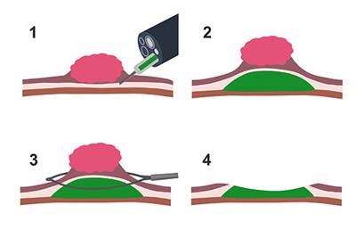
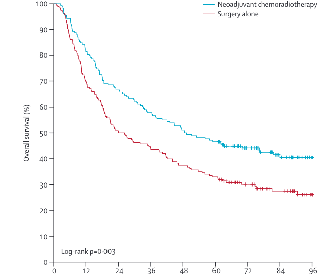
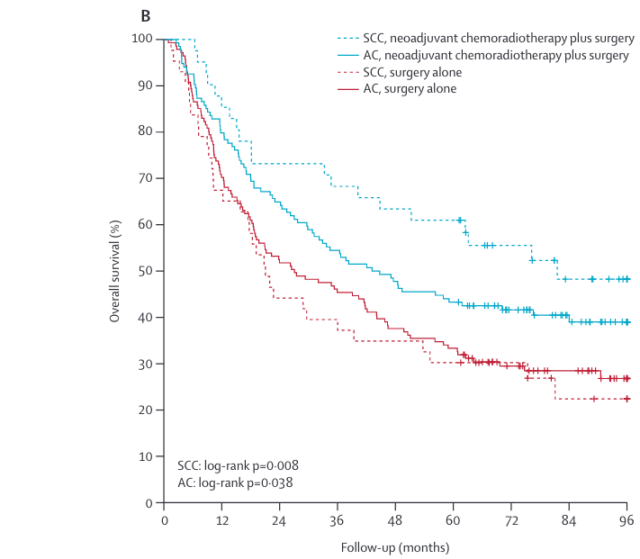
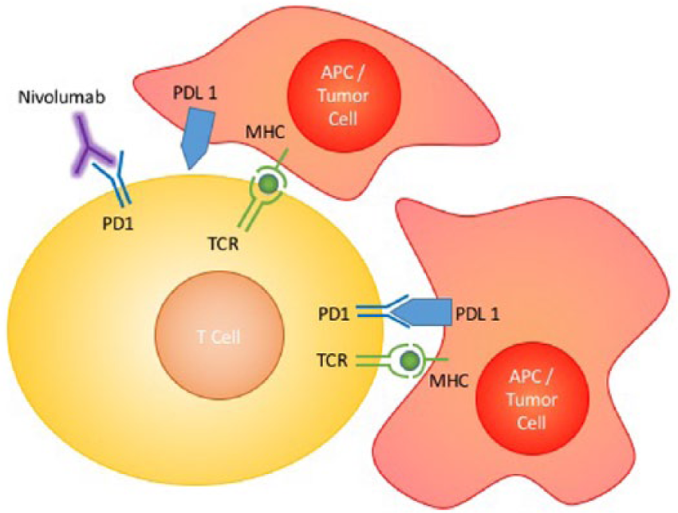
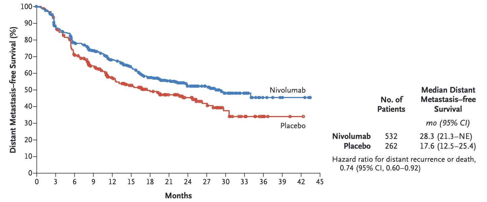

Esophageal Cancer Treatment
Disparities in esophageal cancer
Treatment Categories
| Category | Stage | Treatment |
|---|---|---|
| Dyplasia | Tis | Radiofrequency Ablation |
| Superficial Tumors | T1a | Endoscopic Therapy |
| Localized Tumors | T1b T2 | Surgery |
| Locally-advanced | T3 or N+ | ChemoRT → Surgery |
| Metastatic | M1 | Chemotherapy +/- Radiation |
Dyplasia
Radiofrequency Ablation results in eradication of Barrett’s in 75% at 1 year
Superficial Tumors
Workup of nodular Barretts:
- Endoscopic Ultrasound
- Endoscopic Mucosal Resection
- Diagnostic (T staging)
- May be therapeutic for T1a tumors
Endoscopic Musocal Resection

Localized Tumors
Patients staged as uT2 N0 are candidates for primary surgery. However:
- EUS has a 25% rate of understaging uT2 N0 tumors
- Understaged patients who undergo primary surgery would need chemo or chemoRT postop
Small Tumors (minimal dysphagia)
- EUS to distinguish T2 from T3 tumors
- If uT2 N0 \(\rightarrow\) CT chest/abdomen/pelvis \(\rightarrow\) Esophagectomy
- If uT3 or N1 \(\rightarrow\) PET \(\rightarrow\) neoadjuvant therapy
Symptomatic Tumors (Dysphagia)
Patients with dysphagia to solids or weight loss or tumor length >3cm are unlikely to have T1-2 tumors and can be evaluated with PET Scan
- Disease confined to the esophagus and regional nodes \(\rightarrow\) Locally-advanced
- Metastatic disease \(\rightarrow\) Metastatic
- N3 \(\rightarrow\) induction chemotherapy followed by chemoradiation and surgical evaluation.
EUS in Patients with Dysphagia
Memorial Sloan Kettering(Ripley et al., 2016) patients with esophageal cancer:
- 61 with dysphagia, 54 (89%) were found on EUS to have uT3-4 tumors.
- 53 without dysphagia, 25 (47%) were uT1-2, and were potentially candidates for primary surgery.
EUS can be omitted for patients with dysphagia, but is useful in patients without dysphagia.
PET Scan
PET has more specificity and sensitivity than CT in detecting regional lymph node and distal metastasis (Block et al., 1997)
Locally-advanced
For patients with locally-advanced esophageal cancer, improved outcomes with additional therapy. There are two options:
- ChemoRT \(\rightarrow\) Surgery (CROSS Trial)
- Chemo \(\rightarrow\) Surgery \(\rightarrow\) Chemo (EsoPEC Trial)
CROSS Trial
- 368 esophageal cancer patients randomized:
- Surgery alone
- Chemo+RT \(\rightarrow\) Surgery
- 75% adenocarcinoma
- T3: 80%. T2: 17%
- median age=60
- longer survival with Chemo+RT \(\rightarrow\) Surgery
CROSS - Overall Survival

CROSS - Survival by Histology

CROSS - Pathologic Complete Response
pCR seen in 23% of patients with adenocarcinoma
pCR seen in 40% of patients with squamous cell carcinoma
Adjuvant Therapy after CROSS
Checkmate 577 Trial
Nivolumab: PD-L1 agonist ligand
Interferes with tumor cell down-regulation of T cells
Active against stage IV esophageal cancer
Nivolumab

Chekmate 577 Trial
EsoCA patients who received ChemoRT\(\rightarrow\) Surgery with residual disease (not pCR)
Randomized to one year of immunotherapy (nivolumab) vs Observation
Adjuvant nivolumab group had better survival
Chekmate 577 Trial

Neoadjuvant Chemo for EsoCA
- MAGIC trial (gastric): ECF\(\rightarrow\)Surgery\(\rightarrow\)ECF vs Surgery
- OEO2 Trial: (esophageal) Chemo\(\rightarrow\)Surgery\(\rightarrow\) Chemo vs Surgery
- FLOT (gastric): FLOT\(\rightarrow\)Surgery\(\rightarrow\) FLOT vs ECF\(\rightarrow\)Surgery\(\rightarrow\)ECF
- EsoPEC: (esophageal):FLOT\(\rightarrow\)Surgery\(\rightarrow\)FLOT vs ChemoRT\(\rightarrow\)Surgery (CROSS)
OEO2 Clinical Trial
802 Esophageal adenocarcinoma and squamous cell
Randomized to Chemo \(\rightarrow\) Surgery \(\rightarrow\) Chemo vs Surgery alone
Chemotherapy with ECF (Epirubicin, Cisplatin, 5FU)
5-year survival 23% for chemo+surgery vs 17% fo surgery (HR 0.84 p=0.03)
EsoPEC Trial
Esophageal cancer
Randomized to CROSS vs FLOT
Better survival with FLOT
Metastatic
FOLFOX is first-line systemic therapy for metastatic GI cancers
- Dose-limiting toxicity is frequently peripheral neuropathy